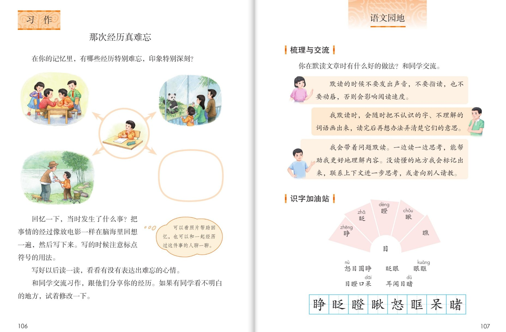
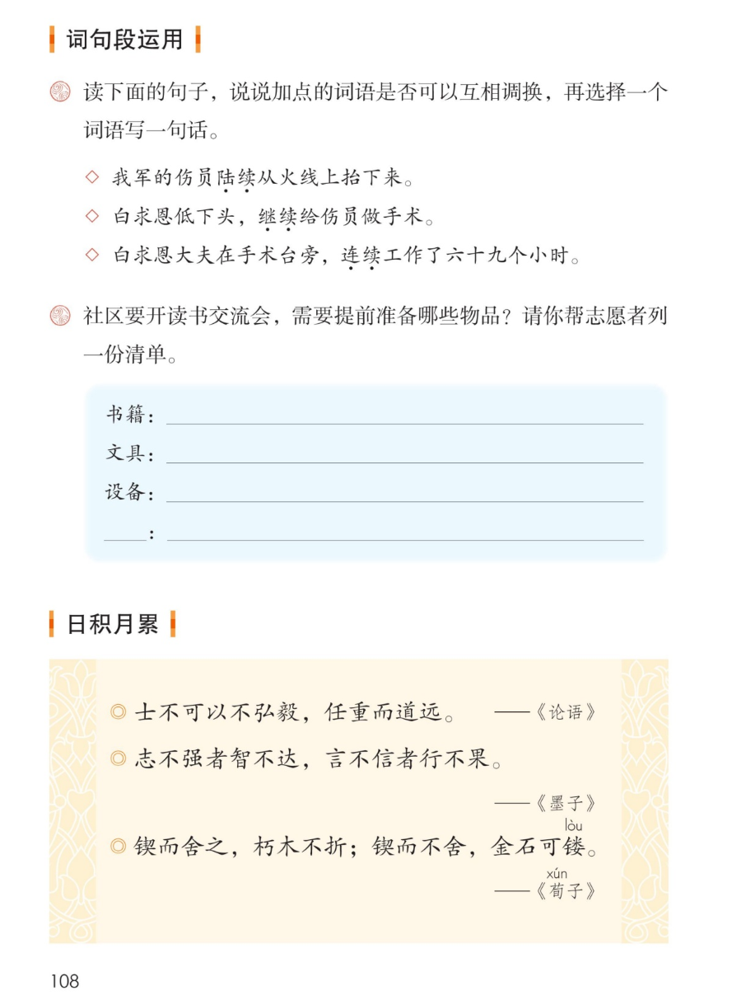

×
🔊 手机听不到声音怎么办？
① 先把手机
媒体音量调大 ，确认没开静音、没连蓝牙耳机；在微信里打开的，点右上角「⋯ → 用浏览器打开」。
② 还是没声音？到应用商店免费下载
Microsoft Edge 浏览器 （它自带朗读发声），用它打开本页面就能出声。
③ 换了 Edge 仍然没声音，说明这部手机的
硬件/系统不支持 网页朗读（多为老旧机型）；近几年买的新手机一般都能正常播放。
→ 打开声音自检
🏞 语文园地八 · 有声图文学习页
统编版语文 · 第八单元 · 课本 P107~108 · 素养升级版（对标 2022 课标第二学段）
板块内容 6 段
素养目标 4
会认字 6
会写字 8
听写词 12
近义词 4 组
深入理解 8 题
🎧 语文园地这样学（可随时点任意一句、一个字、一个词单独听）： ① 梳理与交流 ——默读的三个好做法（教材三气泡照录）。② 识字加油站 ——目字族：睁、瞪、瞅、眶、呆、睹；田字格 8 个字。③ 词句段运用 ——陆续、继续、连续能不能互换？再帮志愿者列一份读书交流会清单。④ 日积月累 ——三句名言，读一读、背一背。⑤ 深入理解 ——8 道题，把园地的本领练扎实。🌟 默读三诀（本单元收官）：不出声不指读不动唇；随读随画记问题；带着问题边读边想。
📌 本单元语文要素——单元导语（P95 照录）：美好的品质，犹如温暖的阳光，带给我们希望和力量；阅读：学习带着问题默读，理解课文内容；习作：学写一件简单的事。
🀄 文化自信
🀄 文化自信
诵读《论语》《墨子》《荀子》三句名言，感受中华优秀传统文化中立志、守信、坚持的力量。
🗣 语言运用
🗣 语言运用
交流默读的好做法；认识目字族 6 个生字、会写 8 个字；辨析陆续、继续、连续，学着列一份清单。
💡 思维能力
💡 思维能力
发现目字旁的字大多与看有关；判断三个加点词语能否互换，说出理由。
🎨 审美创造
🎨 审美创造
把默读的好方法变成自己的读书本领，把名言读进心里、用在身上。
点段前的 ①②③ 听整段
🔁 跟读模式：关
👁 隐藏注音（自测用）
词语卡上的拼音标的是易错音，读音供参考
🎤 园地学习要求（教材标准） 梳理与交流 ：你在默读文章时有什么好的做法？和同学交流；识字加油站 ：认识目字族生字，读记词语，学写田字格 8 个字；词句段运用 ：加点词语能否互换？再列一份读书交流会清单；日积月累 ：读一读，背一背三句名言。
💡 园地小提示（五步走） 交流默读 ——说出你的好做法；第二步 发现秘密 ——目字旁的字大多和看有关；第三步 辨词语 ——陆续、继续、连续各写一句；第四步 列清单 ——按类别一件不漏；第五步 背名言 ——挑一句做座右铭。
①
你在默读文章时有什么好的做法？和同学交流。
📌 这一段讲：梳理与交流导语（照录）：你在默读文章时有什么好的做法？和同学交流。
②
默读的时候不要发出声音，不要指读，也不要动唇，否则会影响阅读速度。
我默读时，会随时把不认识的字、不理解的词语画出来，读完后冉想办法弄清楚它们的意思。
我会带着问题默读。一边读一边思考，能帮助我更好地理解内容。没读懂的地方我会标记出来，联系上下文进一步思考，或者向别人请教。
📌 这一段讲：默读三个好做法（教材三气泡照录）：不出声不指读不动唇；随读随画，读完再弄懂；带着问题边读边想，标记后联系上下文思考或向别人请教。
③
怒目圆睁
眨眼
眼眶
目瞪口呆
耳闻目睹
📌 这一段讲：识字加油站（目字族词语照录）：怒目圆睁、眨眼、眼眶、目瞪口呆、耳闻目睹——目字旁的字大多和看有关。
④
读下面的句子，说说加点的词语是否可以互相调换，再选择一个词语写一句话。
我军的伤员陆续从火线上抬下来。
白求恩低下头，继续给伤员做手术。
白求恩大夫在手术台旁，连续工作了六十九个小时。
📌 这一段讲：词句段运用一（照录）：陆续、继续、连续能否互换？伤员陆续抬下来；低下头继续做手术；连续工作六十九个小时。
⑤
社区要开读书交流会，需要提前准备哪些物品？请你帮志愿者列一份清单。
书籍：
文具：
设备：
📌 这一段讲：词句段运用二（照录）：帮志愿者列读书交流会物品清单——书籍、文具、设备，还可以补充自己的类别。
⑥
士不可以不弘毅，任重而道远。——《论语》
志不强者智不达，言不信者行不果。——《墨子》
锲而舍之，朽木不折；锲而不舍，金石可镂。——《荀子》
📌 这一段讲：日积月累（三句名言照录）：士不可以不弘毅，任重而道远（《论语》）；志不强者智不达，言不信者行不果（《墨子》）；锲而舍之，朽木不折，锲而不舍，金石可镂（《荀子》）。
🤔 想一想（点我可跳过）

第 107 页 · 梳理与交流 · 识字加油站（双页左）

第 108 页 · 词句段运用 · 日积月累
📖 人教版《语文》三年级上册 · 课本第 107~108 页 · 图片仅供个人学习，版权归人民教育出版社所有
点一张卡，听读音和词语（提示为通用规范，供参考）
结构、部首与书写提示为通用规范，供参考，以教材和老师的指导为准
睁zhēng
睁眼
左右 · 目 · 11画
目字旁写窄，右边的争字横画间距均匀，竖钩有力。
眨zhǎ
眨眼
左右 · 目 · 9画
目字旁要窄，右边的乏字先写撇，点不要丢。
瞪dèng
瞪眼
左右 · 目 · 17画
目字旁窄长，右边的登字上宽下稳，豆字底横要长。
瞅chǒu
瞅一瞅
左右 · 目 · 14画
左宽右窄，目字旁写正，右边的秋字撇捺舒展。
怒nù
怒目
上下 · 心 · 9画
上面是奴，写紧凑；心字底要托稳，卧钩有力。
眶kuàng
眼眶
左右 · 目 · 11画
目字旁窄，右边的匡字先横后里再竖折，最后封底。
呆dāi
发呆
上下 · 口 · 7画
口字上提写小，木字横短撇捺舒展，竖写在正中。
睹dǔ
目睹
左右 · 目 · 13画
目字旁写窄，右边的者字撇要长，日字底写扁。
点一行，听读这一组词语
睁 睁眼 睁开 怒目圆睁
眶 眼眶 眼眶发热
呆 发呆 目瞪口呆 呆住
睹 目睹 耳闻目睹 有目共睹
读两遍 → 你在纸上写 → 报答案 → 听示范句
准备听写 · 共 12 个词
○ ○ ○
点下面的「开始听写」，听到一个词就写一个词。
▶ 开始听写
🔁 再读一遍
👁 看答案
点词听读，点句子听示范句，再自己说一句
1 怒目 积累词
示范句：他怒目圆睁，盯着捣乱的同学。
✏️ 我也能说：谁怒目圆睁。
2 睁眼 积累词
示范句：清晨，我睁开眼睛。
✏️ 我也能说：谁睁眼。
3 眨眼 积累词
示范句：小猫冲我眨了眨眼。
✏️ 我也能说：谁眨眼。
4 瞪眼 积累词
示范句：别瞪眼，好好说。
✏️ 我也能说：谁瞪眼。
5 眼眶 积累词
示范句：听到这个消息，她的眼眶红了。
✏️ 我也能说：谁的眼眶怎么样。
6 发呆 积累词
示范句：他望着窗外发呆。
✏️ 我也能说：谁在发呆。
7 目睹 积累词
示范句：我亲眼目睹了这感人的一幕。
✏️ 我也能说：谁目睹什么。
8 陆续 积累词
示范句：我军的伤员陆续从火线上抬下来。
✏️ 我也能说：谁陆续怎么样。
9 继续 积累词
示范句：白求恩低下头，继续给伤员做手术。
✏️ 我也能说：谁继续做什么。
10 连续 积累词
示范句：白求恩连续工作了六十九个小时。
✏️ 我也能说：谁连续做什么。
11 书籍 积累词
示范句：读书交流会要准备书籍。
✏️ 我也能说：准备什么。
12 清单 积累词
示范句：请你帮志愿者列一份物品清单。
✏️ 我也能说：谁列什么。
相同点 / 不一样在哪 / 各造一句
陆续 — 连续
相同：都表示一个接一个。
不一样：陆续 是前前后后、有先有后，中间可以断；连续 是中间不间断，一口气下去。
陆续：伤员陆续从火线上抬下来。
继续 — 接着
相同：都表示停了之后再往下。
不一样：继续 稍正式，可带对象（继续做手术）；接着 更口语，多用在前文衔接。
继续：白求恩低下头，继续给伤员做手术。
目睹 — 看见
相同：都表示用眼睛看到。
不一样：目睹 是书面语，强调亲眼看到（常配耳闻）；看见 是口语，日常都用。
目睹：我亲眼目睹了这感人的一幕。
竖立 — 建立
相同：字形相近，注意区分。
不一样：竖立 是物体直直立起（旗杆竖立）；建立 是使形成、创立（建立友谊）。
竖立：广场上竖立着一根旗杆。
默读三不要 不出声 不指读 不动唇
默读三要做 随读随画 带着问题边读边想 标记后联系上下文思考或向别人请教
目字族词语 怒目圆睁 眨眼 眼眶 目瞪口呆 耳闻目睹
三句名言出处 《论语》弘毅任重 《墨子》志强言信 《荀子》锲而不舍
点一张卡，听读这一条
语文园地是单元的收获仓库 ——把这一单元的默读本领、目字族识字、三兄弟词语和三句名言，一样一样装进书包。
🤫 默读三不要
默读的时候不要发出声音，不要指读，也不要动唇，否则会影响阅读速度——三条你都做到了吗？
✏️ 默读三要做
随读随画：不认识的字、不理解的词画出来，读完再弄懂；带着问题边读边想；没读懂的标记出来，联系上下文思考或向别人请教。
👀 目字族的秘密
睁、瞪、瞅、眶、睹都是目字旁，大多和眼睛、看有关——认字旁猜字义，一猜一个准。🌈 再找找还有哪些目字旁的字。
🧩 陆续继续连续
陆续有先有后；继续停后再做；连续中间不停——对着教材三个菱形句读一读，差别就清楚了。再选一个词语写一句话。
📋 清单小妙招
列清单按类别分：书籍、文具、设备……一类一类想，一条一条列，还要想想漏了什么——这就是做事有条理。
📜 三句名言记心间
弘毅任重、志强言信、锲而不舍——挑一句抄下来做座右铭，说说你为什么选它。🌈 答案不唯一。
标「答案不唯一」的题，说得有道理都对
认知 默读三气泡里，“不要做”的是哪三件事？（照录）看解析
🤔 想一想
解析：
默读的时候不要发出声音，不要指读，也不要动唇，否则会影响阅读速度。
🌈 答案不唯一，说得有道理都对
认知 日积月累三句名言分别出自哪些书？（照录）看解析
🤔 想一想
解析：
士不可以不弘毅，任重而道远出自《论语》；志不强者智不达，言不信者行不果出自《墨子》；锲而舍之，朽木不折，锲而不舍，金石可镂出自《荀子》。
🌈 答案不唯一，说得有道理都对
理解 词句段运用①：加点的陆续、继续、连续可以互相调换吗？说说理由。（照录题目）看解析
🤔 想一想
解析：
不能随便调换：陆续是前前后后、有先有后（伤员陆续抬下来）；继续是停顿之后再接着做（低下头继续做手术）；连续是中间不间断（连续工作六十九个小时）——意思各有侧重，换了句子就不对了。
🌈 答案不唯一，说得有道理都对
理解 睁、瞪、瞅、眶、呆、睹有什么共同点？这能帮我们怎样认字？看解析
🤔 想一想
解析：
它们都是目字旁，大多和眼睛、看有关——认字先看偏旁，就能猜出字义的大方向；再联系词语（怒目圆睁、耳闻目睹）就记得牢。
🌈 答案不唯一，说得有道理都对
理解 帮志愿者列读书交流会物品清单，你打算怎么列？（照录题目）看解析
🤔 想一想
解析：
按类别分：书籍类——故事书、绘本、字典；文具类——笔、本子、姓名贴；设备类——话筒、音响、桌椅；再补一类——水和小点心。🌈 类别分清、一条条列清楚就好。
🌈 答案不唯一，说得有道理都对
运用 选择陆续、继续、连续中的一个词语写一句话。（照录要求）看解析
🤔 想一想
解析：
🌈 答案不唯一：陆续——放学了，同学们陆续走出校门；继续——休息了一会儿，我们继续写作业；连续——他连续三天得了满分。句子通顺、用词对位就对。
🌈 答案不唯一，说得有道理都对
运用 用自己的话说说“锲而舍之，朽木不折；锲而不舍，金石可镂”的意思，再说说它让你想到本单元的谁。看解析
🤔 想一想
解析：
刻几下就放弃，连朽木也刻不断；坚持不停地刻，金石也能雕刻成功——让我想到童第周（基础差不放弃，终于赶上来）和白求恩（连续工作六十九个小时）。🌈 意思对、联系课文有理都算对。
🌈 答案不唯一，说得有道理都对
拓展 三句名言里，你最想把哪一句做座右铭？为什么？看解析
🤔 想一想
解析：
🌈 答案不唯一：如选锲而不舍，金石可镂——因为它提醒我做事要坚持；选志不强者智不达——因为志向坚定，本领才长得大。说出名言、讲清理由就好。
🌈 答案不唯一，说得有道理都对
💬 学习支架：先 交流默读好做法 → 再 认目字族 → 接着 辨陆续继续连续 → 然后 学列清单 → 最后 背三句名言。
点一个角色，听他（她）说的话
🎭 小主持人
欢迎来到语文园地收获交流会！今天我们晒一晒第八单元的收获：默读好做法、目字族、三兄弟词语，还有三句名言。
💬 要读得自然、有味 ，像真的在开收获交流会
🎭 默读分享员
我默读时，会随时把不认识的字、不理解的词语画出来，读完后冉想办法弄清楚它们的意思；我还会带着问题默读，一边读一边思考。
💬 要读得自然、有味 ，像真的在开收获交流会
🎭 识字小达人
目字族的秘密我知道：睁、瞪、瞅、眶、睹都是目字旁，大多和看有关——怒目圆睁、目瞪口呆、耳闻目睹，一起读！
💬 要读得自然、有味 ，像真的在开收获交流会
🎭 名言领读员
士不可以不弘毅，任重而道远；锲而不舍，朽木不折；锲而不舍，金石可镂——跟我读，声音要坚定！
💬 要读得自然、有味 ，像真的在开收获交流会
🎭 旁白
语文园地是收获的仓库——把好方法、新汉字、好词语、好句子都收进书包，下一单元再见！
💬 要读得自然、有味 ，像真的在开收获交流会
每题给自己打 1~3 颗星
1. 我能说出默读的三个好做法，并用在读书上。 ☆ ☆ ☆
2. 我能认读目字族 6 个生字，规范书写田字格 8 个字。 ☆ ☆ ☆
3. 我能辨析陆续、继续、连续，选词写一句话。 ☆ ☆ ☆
4. 我能按类别列一份物品清单，一条不漏。 ☆ ☆ ☆
5. 我能背诵三句名言，说出自己最喜欢的一句和理由。 ☆ ☆ ☆
✍️ 小练笔 （照词句段运用要求）：读三个菱形句，说说加点词语能否互换，再选择一个词语写一句话 。抄下来 ，挑一句做座右铭 ，写一写你为什么选它。